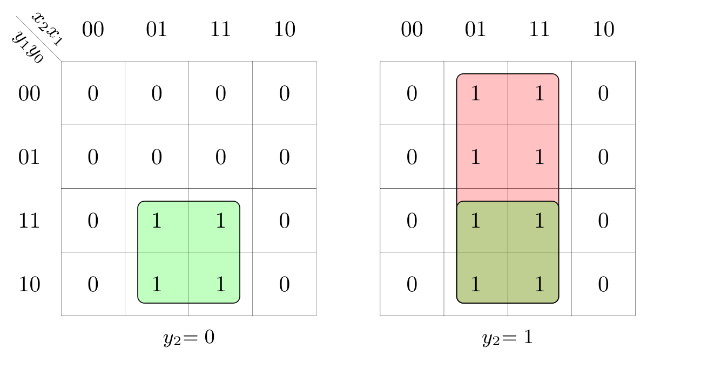

Definizione - Memoria binaria
Una memoria binaria è un circuito in grado di memorizzare il valore di un bit.
Esse sono realizzate utilizzando delle RSA e sono uno dei componenti primitivi più importanti, in quanto sono utilizzate per realizzare reti sincrone e, ad esempio, circuiti come le RAM.
In base alla sequenza di ingressi che porta alla scrittura di un bit e quando sono sensibili a comandi di modifica, si hanno tre tipi di memorie:
Esse sono realizzate utilizzando delle RSA e sono uno dei componenti primitivi più importanti, in quanto sono utilizzate per realizzare reti sincrone e, ad esempio, circuiti come le RAM.
In base alla sequenza di ingressi che porta alla scrittura di un bit e quando sono sensibili a comandi di modifica, si hanno tre tipi di memorie:
- Latch SR;
- Latch CD;
- Flip-flop D.
Definizione - Latch SR
Il Latch SR  è la memoria binaria più semplice ed è caratterizzata da:
è la memoria binaria più semplice ed è caratterizzata da:  Essa è quindi una rete sequenziale dato che alla configurazione \( 00\) possono corrispondere due uscite differenti e non è previsto l'utilizzo della configurazione \( 11\) nell'uso corretto della rete. Il grafo degli stati che descrive questo componente è il seguente
Essa è quindi una rete sequenziale dato che alla configurazione \( 00\) possono corrispondere due uscite differenti e non è previsto l'utilizzo della configurazione \( 11\) nell'uso corretto della rete. Il grafo degli stati che descrive questo componente è il seguente  dove gli stati \( A\) e \( B\) indicano Dal grafo degli stati è quindi facile derivare la tabella di flusso
dove gli stati \( A\) e \( B\) indicano Dal grafo degli stati è quindi facile derivare la tabella di flusso  da cui è semplice derivare la tabella delle transizioni
da cui è semplice derivare la tabella delle transizioni  da cui è facile ottenere la sintesi combinatoria:
da cui è facile ottenere la sintesi combinatoria:
- un ingresso di set \( S\);
- un ingresso di reset \( R\);
- due uscite che rendono disponibile il valore del bit memorizzato (\( Q\)) ed il suo complemento (\( Q'\)).

- l'uscita \( Q\) è uguale alla sola variabile di stato \( y\);
- lo stato futuro \( Y\) può essere sintetizzato in diversi modi (che saranno trattati in seguito).
Definizione - Latch SR - Sintesi PS e a NOR dello stato futuro
Data la tabella della verità dello stato futuro del Latch SR  che equivale all'espressione \( Y = \bar{R} \cdot (y + S)\) e al circuito
che equivale all'espressione \( Y = \bar{R} \cdot (y + S)\) e al circuito  Per ottenere quindi l'uscita complementata \( Q'\) è necessario utilizzare anche un NOT.
Per ottenere quindi l'uscita complementata \( Q'\) è necessario utilizzare anche un NOT.
È invece possibile trasformare l'espressione in una sintesi a NOR, da cui si ottiene l'espressione \[ Y = R \downarrow (y \downarrow S) \] che equivale al seguente circuito dove è già fornita l'uscita complementata.
dove è già fornita l'uscita complementata.
è semplice ottenere la sintesi PS, ovvero
È invece possibile trasformare l'espressione in una sintesi a NOR, da cui si ottiene l'espressione \[ Y = R \downarrow (y \downarrow S) \] che equivale al seguente circuito
Osservazioni personali - Uscita complementata e configurazione vietata \( 11\)
Per verificare che il circuito fornisca l'uscita complementata è necessario verificare che la tabella della verità delle due uscite sia coerente, ovvero che \[ S \downarrow y =_{?} \overline{R \downarrow (y \downarrow S)} \] Costruendo la tabella della verità si ottiene
Come si può notare le due uscite sono coerenti per le diverse configurazioni ad eccezione di tre casistiche:
- con la configurazione degli ingressi \( 11\), che non risulta essere un problema in quanto la configurazione è vietata nell'uso corretto della rete;
- con lo stato corrente \( 1\) (ovvero lo stato "Memorizzo \( 1\)") e la configurazione di ingressi \( 01\) (che equivalgono all'azione "Scrivi \( 0\)"), che non risulta essere un problema in quanto cambiando un bit di ingresso alla volta risulta impossibile trovarsi in questa situazione (in quanto la configurazione di ingressi \( 01\) porterebbe ad essere nello stato \( y = 0\)).
Definizione - Latch SR - Sintesi SP e a NAND dello stato futuro
Analogamente come per la sintesi PS, è facile ottenere dalla tabella della verità dello stato futuro del Latch SR  la sintesi SP
la sintesi SP 
che equivale all'espressione \( Y = S \cdot (y + \bar{R})\) e al circuito
Anche in questo caso è conveniente effettuare la sintesi a NAND per ottere l'uscita complementata, da cui si ottiene l'espressione \[ Y = \bar{S} \uparrow (y + \bar{R}) \] e il circuito
Osservazioni personali - Latch \( \bar{S}\bar{R}\)
Nel caso il Latch sia realizzato con la sintesi a NAND, esso è anche chiamato Latch \( \bar{S}\bar{R}\) in quanto richiede gli ingressi complementati.
Definizione - Stato iniziale nei Latch SR
Essendo il Latch SR una rete sequenziale, "soffre" anch'essa della casualità dello stato iniziale: se in casi come le RAM ciò non risulta essere un problema, in altri casi è necessario che tali valori sia predeterminati.
Esistono per questo motivo delle varianti di questo componente che introducono degli ingressi con priorità maggiore rispetto agli ingressi \( S\) e \( R\):
L'idea è quindi quella di creare una rete di combinatoria di inizializzazione che "pilota" il latch durante durante l'inizializzazione e il cui comportamento è il seguente (dove \( S_{2}\), \( R_{2}\) sono le uscite della rete combinatoria che andranno poi a pilotare il "vero" latch) da cui è possibile ottenere le seguenti espressioni: \begin{aligned} & S_{2} = PRE + (\overline{CLR} \cdot S) & R_{2} = CLR + (\overline{PRE} \cdot R) \end{aligned} equivalenti alla seguente rete:
da cui è possibile ottenere le seguenti espressioni: \begin{aligned} & S_{2} = PRE + (\overline{CLR} \cdot S) & R_{2} = CLR + (\overline{PRE} \cdot R) \end{aligned} equivalenti alla seguente rete:
Tale componente potrebbe essere utilizzato nel seguente modo per memorizzare inizialmente \( 0\), e nel seguente modo per memorizzare \( 1\)
per memorizzare inizialmente \( 0\), e nel seguente modo per memorizzare \( 1\)
Esistono per questo motivo delle varianti di questo componente che introducono degli ingressi con priorità maggiore rispetto agli ingressi \( S\) e \( R\):
- l'ingresso di preset (indicato con \( PRE'\) dato che l'ingresso è attivo basso) che forza il latch a memorizzare il bit \( 1\);
- l'ingresso di clear (indicato con \( CLR'\) dato che l'ingresso è attivo basso) che forza il latch a memorizzare il bit \( 0\).
L'idea è quindi quella di creare una rete di combinatoria di inizializzazione che "pilota" il latch durante durante l'inizializzazione e il cui comportamento è il seguente (dove \( S_{2}\), \( R_{2}\) sono le uscite della rete combinatoria che andranno poi a pilotare il "vero" latch)
Tale circuito potrebbe essere inoltre ulteriormente semplificato conoscendo la struttura del Latch SR (unendo l'OR ed il NOR ad esempio) oppure realizzare la rete combinatoria più adatta per "pilotare" un Latch \( \overline{S}\overline{R}\).
Tale componente potrebbe essere utilizzato nel seguente modo
Definizione - Durata minima degli ingressi e metastabilità
La durata minima degli ingressi di un latch è di \( 2 \cdot \tau_{p}\) ed è solitamente indicata dal costruttore con la dicitura "pulse duration".
Nel caso non si rispetti questa durata minima, si ha che il latch può andare in metastabilità.
Nel caso non si rispetti questa durata minima, si ha che il latch può andare in metastabilità.
Osservazioni personali - Un po' di elettronica
Considerando il segnale di stato del Latch, esso può essere "diviso idealmente in due", ovvero in stato presente \( q\) e stato futuro \( Q\) (il valore dello stato che si avrà tra \( 2\tau_{p}\)).
Idealmente tale bit assume solo due valori ("High" e "Low"), invece nella realtà è un segnale analogico che assume un numero infinito di valori e che si considera H o L in base alla vicinanza rispetto ad un valore predefinito. Il segnale è tuttavia soggetto a rumore (a causa di fenomeni fisici inevitabili) e per rendere il circuito il più robusto possibile si decide di modificare la pendenza della retta che descrive il rapporto \( Q = q\) nel seguente modo
Il segnale è tuttavia soggetto a rumore (a causa di fenomeni fisici inevitabili) e per rendere il circuito il più robusto possibile si decide di modificare la pendenza della retta che descrive il rapporto \( Q = q\) nel seguente modo  In questo modo si ottengono due effetti:
In questo modo si ottengono due effetti:
Tuttavia per poter ottenere le pendenze corrette nelle zone di campionamento, è necessario "inserire" una zona con pendenza maggiore di \( 1\) e ciò porta alla creazione di un terzo "punto focale M" (oltre ai punti focali "H" e "L"). Tale punto è detto di metastabilità in quanto non si può assumere che sia "H" o "L" e al primo disturbo assumerà un valore indeterminabile.
È quindi necessario rispettare il vincolo di "pulse-duration" affinchè la rete funzioni correttamente.
Idealmente tale bit assume solo due valori ("High" e "Low"), invece nella realtà è un segnale analogico che assume un numero infinito di valori e che si considera H o L in base alla vicinanza rispetto ad un valore predefinito.
- nelle zone in cui la pendenza è minore di \( 1\) si rende il circuito più incline alla stabilità;
- nelle zone in cui la pendenza è maggiore di \( 1\) si rende il circuito meno stabile;
ovvero tenderà alla stabilità. Nel caso si avesse una pendenza maggiore di \( 1\), ciò porterebbe invece all'effetto contrario.
Tuttavia per poter ottenere le pendenze corrette nelle zone di campionamento, è necessario "inserire" una zona con pendenza maggiore di \( 1\) e ciò porta alla creazione di un terzo "punto focale M" (oltre ai punti focali "H" e "L"). Tale punto è detto di metastabilità in quanto non si può assumere che sia "H" o "L" e al primo disturbo assumerà un valore indeterminabile.
È quindi necessario rispettare il vincolo di "pulse-duration" affinchè la rete funzioni correttamente.